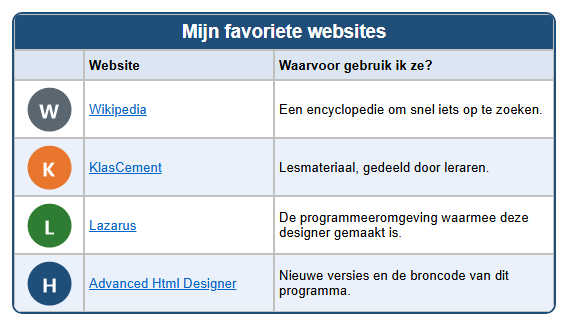

Leerpad › Les 6
Hyperlinks

Wat is een hyperlink?
Een hyperlink (kortweg link) is tekst of een afbeelding waarop je kunt klikken. Achter de link zit een
adres (URL), bijvoorbeeld https://nl.wikipedia.org. In de browser is een tekstlink meestal blauw en
onderstreept.
Twee soorten links
- Teksthyperlink: klik op de cel en klik op het tabblad
 Cel (C) op
Cel (C) op
 TH+. Je krijgt twee vragen: eerst het
adres (URL), daarna de tekst die als link verschijnt (standaard de tekst die al in de cel staat).
Met
TH+. Je krijgt twee vragen: eerst het
adres (URL), daarna de tekst die als link verschijnt (standaard de tekst die al in de cel staat).
Met  TH- haal je de link weer weg; de tekst blijft staan.
TH- haal je de link weer weg; de tekst blijft staan. - Afbeeldingshyperlink: klik op een cel met een afbeelding en klik op
 HL+ (Afbeeldingshyperlink maken). Typ het adres.
Met
HL+ (Afbeeldingshyperlink maken). Typ het adres.
Met  HL- haal je de link weg.
HL- haal je de link weg.
https:// ervoor. Kopieer het
liefst uit de adresbalk van je browser, dan maak je geen tikfouten.Zo maak je het zelf
- Maak een tabel van 3 kolommen en 6 rijen, met een titel en een kop Website en Waarvoor gebruik ik ze?
- Typ in de tweede kolom de namen van de websites en in de derde kolom waarvoor je ze gebruikt.
- Maak van elke naam een teksthyperlink met TH+.
- Zet in de eerste kolom een knopje met Afbeelding toevoegen (bv.
knop-w.pnguitlessen\afbeeldingen) en maak er met HL+ een afbeeldingshyperlink van. - Test je links: klik onderaan op Klik hier voor extra functies, open de test-browser en klik op elke link.
Achter de schermen
In de HTML-code is een link een <a>-element. Het adres staat in href:
<a href="https://nl.wikipedia.org">Wikipedia</a>Bij een afbeeldingshyperlink staat de <img> tussen <a> en </a>.
Opdracht
Voeg onderaan een rij toe met een website die jij vaak gebruikt (bijvoorbeeld de website van je school of je sportclub). Maak zowel de naam als het knopje klikbaar en test de link.
Oplossing
Klik op het tabblad Tabel op AR. Typ in de nieuwe rij de naam en de uitleg. Klik op de cel met de naam en klik op TH+; plak het adres uit je browser en bevestig de tekst. Kies in de eerste kolom een knopje met Afbeelding toevoegen, klik op HL+ en plak hetzelfde adres. Open de test-browser en klik op beide links.
Werk je onder Linux? Open het voorbeeld dan zelf met Openen tabel designer: map
lessen, bestand les06-websites.htd.